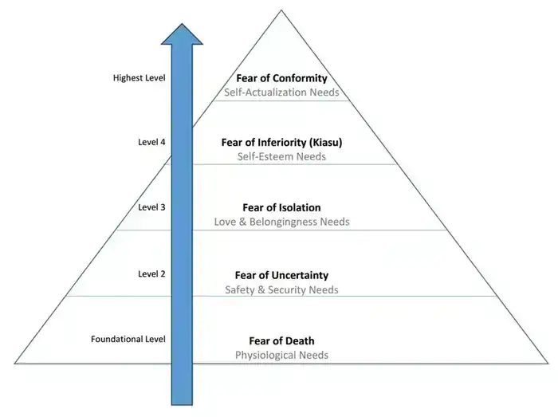
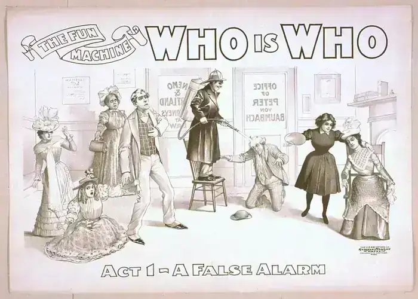
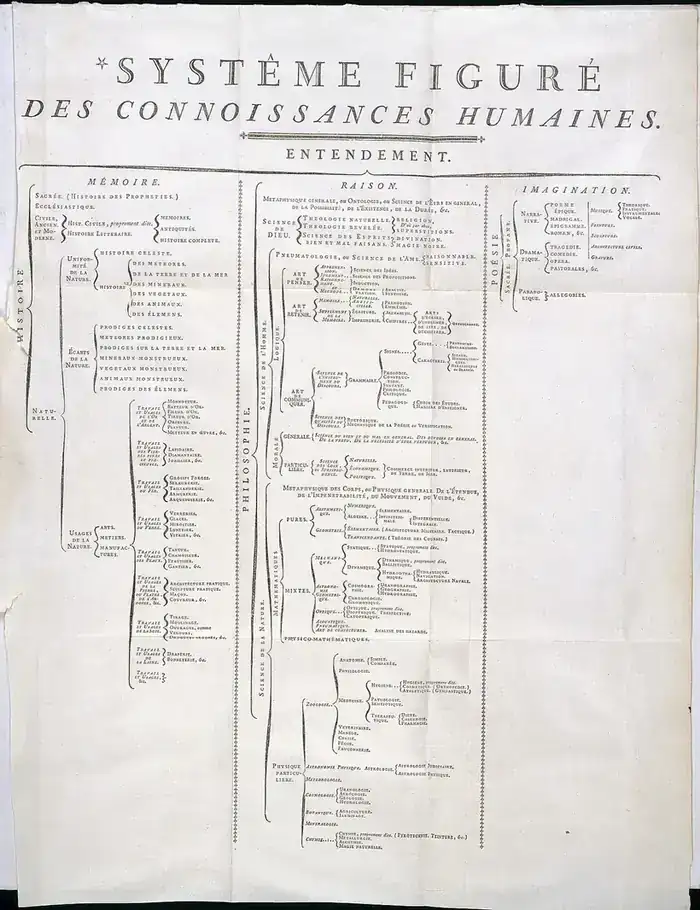

The claim
Claims that a machine is conscious arrive in two forms. One is behavioural: the system says it is, or passes a test. The other is theoretical: a specific theory of consciousness — integrated information, global workspace — implies that a system of the right structure would be conscious.
Maps, diagrams and images






Neither settles the question. Behavioural claims run into the fact that a language model is trained on human text and can produce any answer, including a sincere-sounding denial or affirmation. Theoretical claims depend on the theory, and the theories disagree with each other.
What is actually known
Current systems have no evidence of consciousness, and no test that could establish it. The hard problem — why any physical process is accompanied by experience — is unresolved for brains, so it is not going to be resolved for silicon by an experiment on silicon.
The useful work in the area is about the conditions under which we would have grounds for belief, and about the moral risk of being wrong in either direction. That is a real research programme; the confident claims in both directions are not.
Documented: the theories, the behavioural tests, and the disagreement among researchers.
Not established: that any machine is conscious.
Not established: that no machine could be.
Not available: a test that would decide it.
The honest label: fringe — a claim that cannot currently be tested, in a field where the untestability is the central problem.
Why it is in the archive
Because the archive is about claims and evidence, and this is the claim where the evidence is most obviously absent and the stakes are highest.
Open resources on this topic
- PapersOpen-access articles: DOAJ · PubMed Central · Internet Archive Scholar
- BooksPublic-domain and borrowable copies: Open Library · Project Gutenberg · Google Books · Internet Archive
Cite this page
Momin, S. (2026). Consciousness in the Machine. The Larger World Archive. https://drsamonline.github.io/LARGE_GLOBE/machine-consciousness.htmlMomin, Sohil. “Consciousness in the Machine.” The Larger World Archive, 2026, https://drsamonline.github.io/LARGE_GLOBE/machine-consciousness.html.Momin, Sohil. “Consciousness in the Machine.” The Larger World Archive, 2026. https://drsamonline.github.io/LARGE_GLOBE/machine-consciousness.html.@misc{consciousness2026machine,
author = {Momin, Sohil},
title = {Consciousness in the Machine},
year = {2026},
howpublished = {The Larger World Archive},
url = {https://drsamonline.github.io/LARGE_GLOBE/machine-consciousness.html},
note = {Last reviewed 20 November 2026}
}Last reviewed 20 November 2026 · Corrections policy · this page is not peer reviewed
Sources for this page
- Wikipedia, “Artificial consciousness” — the field and its problemsen.wikipedia.org
- Wikipedia, “Hard problem of consciousness” — the obstacleen.wikipedia.org
- Wikipedia, “Integrated information theory” — one of the theories invokeden.wikipedia.org
- Wikipedia, “Turing test” — the behavioural test and its limitsen.wikipedia.org